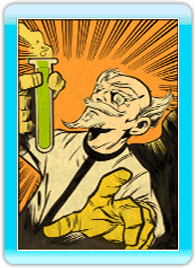
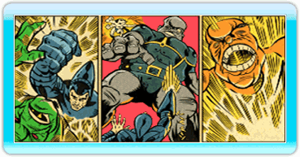

6 |
Story |
 |

Kurt Hectic never wanted to be a hero. He would have been content with a normal life, living his years in quiet, dignified anonymity, but it was not to be. Kurt was a loyal employee, and working for eccentric genius Doctor Fluke Hawkins meant occasionally doing the extraordinary. In utter disbelief, Kurt was eventually called upon to leave his beloved Earth, assuming the unlikely title of first janitor in space. Doctor Hawkins had long suffered ridicule from his fellow scientists. They claimed he was too eccentric, and that his methods were questionable at best. In time Hawkins grew tired of hearing such things, and seeking to work undisturbed he fled the earth into a self-imposed exile. His ship, the ‘Jim Dandy,’ was launched without fanfare, and he swore not to return until he had vindicated himself in the eyes of his peers. Weeks turned to months and months slowly turned to years. 
The greatest of the Doctor’s inventions in exile was a six-legged canine named Max, the first successful attempt by Dr. Hawkins to create an artificial intelligence. ‘Successful’ meant that he never tried to kill the good doctor, and had no plans for global domination. The perfect assistant, Max kept the Doctor grounded in reality, and performed much the same function as the safety-catch on an assault rifle. He was eager to please and adaptable to any task, his gentle soul oddly balanced with an affinity for firepower. The time for Doctor Hawkins to prove the real merit of his genius came sooner than anyone could have expected. Creatures from a strange dimension attacked the Earth, riding ‘energy streams’ to the surface and stripping it of all mineral wealth. They landed great machines: ‘minecrawlers’ that destroyed everything in their path and laid waste to entire cities. The forces of Earth were helpless before the onslaught. 
Watching the devastation on Earth, the crew of the ‘Jim Dandy’ knew they had to act. Kurt was outfitted in the most radical of the Doctor’s creations: an untested armored ‘Coil Suit,’ with chain-gun and a sniper rifle ordinance that could target enemies a mile away. Leaping from the ship on an unconventional parachute of ribbon, Kurt had to make his way to the pilot of each minecrawler and hopefully disable the machines. Kurt was reluctant, but he had no choice. He was the Earth’s last hope. Kurt valiantly fought through the alien defenses, driving to the very heart of each minecrawler, defeating pilot after pilot after pilot, with each falling to his desperate determination. He ultimately challenged the evil mastermind behind the attack, a grotesque, sadistic creature by the name of Gunter Glut. With the aid of Max and the Doctor’s inventions, Kurt was able to take the fight directly to this diabolical beast, and was eventually victorious in the climactic battle. The invasion crumbled and the aliens retreated, their tails between their legs, leaving the Earth battered, despoiled, even ruined, but not beaten. No, not beaten. Now, with the aliens routed and order restored, our heroes can return to their normal, everyday lives. Or can they? Only time will tell. 
|
 |
 |
 |